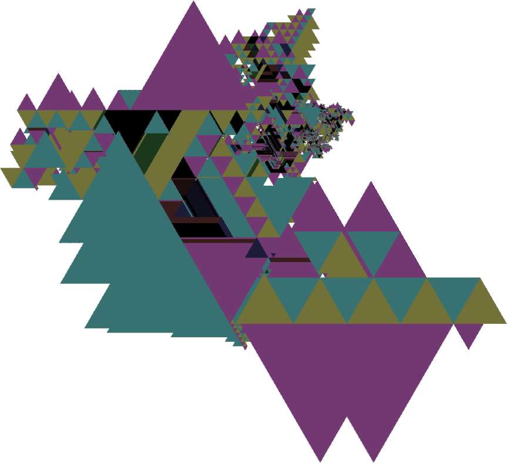

Verified results of Benjamin Chaffin:
Pattern 1420224 terminates at 16,811,365,528.
Pattern 1450224 terminates at 16,811,365,528.
Pattern 2014142 terminates at 3,563,608,205.
Pattern 2145142 terminates at 87,996,218.
Pattern 2454142 terminates at 3,563,608,205.
My new results:
Pattern 1450221 is identical to 1420221 after the 13th step, except turned 180 degrees. This reduces the set of "interesting" patterns by one. (07/Nov/2003)
Pattern 104202 does return to center, at step 57,493,855,199,226. This creates two new "interesting" patterns. (08/Nov/2003)
Pattern 1042020 terminates at step 57,493,855,205,939. (08/Nov/2003) (since verified by both Benjamin Chaffin and John Dethridge)
Pattern 1042022 terminates at step 57,493,855,205,905. (08/Nov/2003) (since verified by both Benjamin Chaffin and John Dethridge)
Pattern 1420221 (and its alter ego 1450221) is infinite. After 98,154 moves, it does a loop in 3864 moves, then 3936 moves, then 4008 moves, and so on, increasing the cycle by 72 moves each time by inserting the same 12 move sequence in six different places. (18/Nov/2003)
So as of this writing, there remain only three "unresolved" patterns:
Pattern 1042015 doesn't terminate after 1.3E18 steps. (27/Jan/2004)
Pattern 1252121 doesn't terminate after 1.1E17 steps. (05/Jan/2004)
Pattern 1525115 doesn't terminate after 1.4E17 steps. (01/Jan/2004)